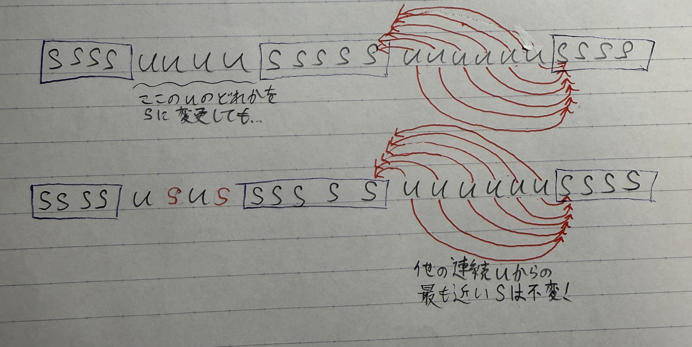
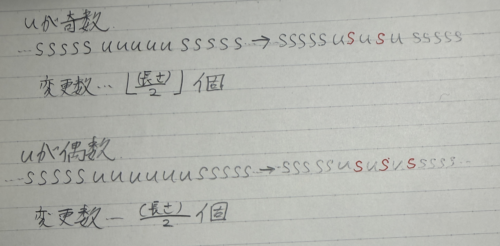
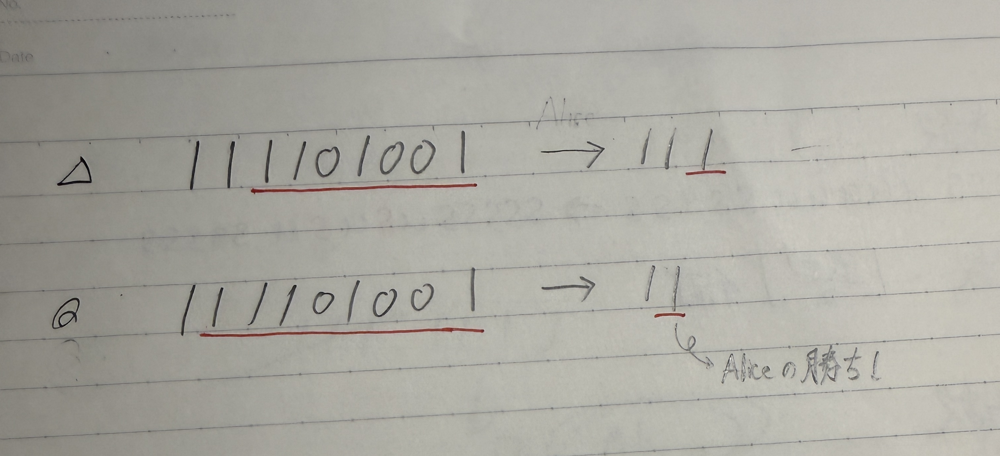
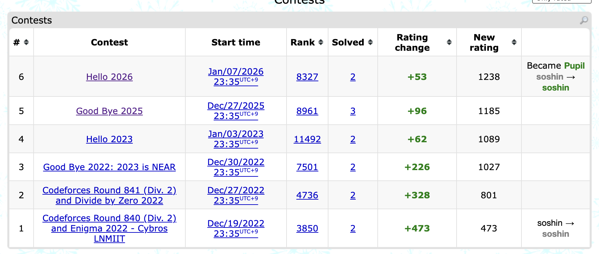

Good Bye 2025
コンテストのリンク : https://codeforces.com/contest/2178
3完した。
A. Yes or Yes
OR計算なので、Yが残り続けることに気づくと一瞬。
残り続けるということは、Yが2つある時点でどのような順番で、どのような場所で操作をしても文字列長が2になるときにYYとなってしまう。(もしくはその前にY or Yとなって詰んでいる。)
逆に、(明らかに)Yが0,1個の時はそもそもYが2つないので問題ない。
つまり、Yの数が2以上か否かで判定できる。
B. Impost or Sus
まず、明らかに端にuがある時はそれをsに変える必要がある。以下は端以外どこを変更する必要があるか考える。
文字の種類が少ない文字列については、ランレングス圧縮を考えると見えるものがある時がある。
その考えをもとにランレングス圧縮で考えてみると、uが連続しているところは明らかにダメ。(例えば、連続uの端の部分のuについて、右隣or左隣はsまで距離が1だが、その反対側は少なくとも2以上)
だから、「連続uの部分を、なるべく少ない個数sに変えていく」ことを考える。
(ここで、異なる連続u部分は要素変更に干渉し合わないことがわかる。なぜならば、下の画像のように、連続uのどこかをsに変更したとしても、他の連続uから見た「直近のsの距離」は変わらないからだ。)
解説では貪欲法でやってみるが、その正当性の証明が少し難しいので、uの長さの偶奇に注目する。それぞれの連続u部分について、sへ変更する最低回数は以下のようになる。
なので、ランレングス圧縮して、各連続u部分についてその長さ/2(切り捨て)を足し合わせていけばそれが答えになる。
(結局、解説ではこの偶奇の場合分けをまとめて貪欲法として処理しているという見方もできそう。)
C. First or Second
「プレゼントをもらえない子供がたった1人」という特殊な条件に注目して、「プレゼントをもらえない子供」を固定して考えるかがポイントだと思う。
「プレゼントをもらえない子供」を固定すると、その子供より後ろにいる子供が明らかに(全員)naughtyになる。
問題は「プレゼントをもらえない子供」の前にいる子供達。
実は、「先頭だけniceで、2番目以降は(全員)niceかnaughtyかを独立に選択できる」ことがわかる。
これの説明は、以下のようにできる。
「まず先頭の子供はすでに1番目に配置されていて、(「プレゼントをもらえない子供」出ないなら)プレゼントをもらえることが確定しているので、niceとしてしか処理できない。 番目以降について、今先頭から2番目にその子供がいるとする。もしniceにしたいのであれば、今1番目にいる子供をniceな子供として除去した後、1番目に配置すればいい(すぐにはプレゼントを与えず、1番目で待機させておき、同様にniceとして処理したい子供が2番目に配置された時にプレゼントを与えて除去する)。 もしnaughtyにしたいのであれば、今1番目にいる子供を待機させたまま、2番目に配置されているのでnaughtyとして処理できる。以上から説明された。」
愚直にやると間に合わないので、事前に累積和を取っておいて処理すれば間に合う。
Hello 2026
コンテストのリンク : https://codeforces.com/contest/2183
2完した。(C問題は解説ACした。)
A. Binary Array Game
普通のA問題より難しかった。
まず初めに、このゲームはかなり(というかめちゃくちゃ)Aliceに不利なゲームで、尚且つすぐにゲームの勝敗がつくことに気づく。
なぜならば、Bobのターンに0を含む数列が存在した時点で、もうBobが勝ってしまうからだ。
そのため、Aliceが勝つ場合を考えて、そうではないときBobが全て勝つ、といった順番で考えるのが楽そう。
結論から言うと、Aliceが勝つ場合は以下の2パターンのどちらかの時のみである。
(1) 最初の数列が1のみで構成されている
(2) 最初の数列から1回のみの操作で数列を{1, 1}に変更できる
(1)は明らか。(2)について説明する。
(1)でない時、数列には0が含まれている。先述の通り、Bobのターンに0を含む数列が存在していたらAliceは負けてしまうので、削除する必要がある。 つまり、1だけの数列{1, 1, 1, ...}を一回のみの操作で作る必要がある。
ここで、Aliceが「1だけの長さ2以上の数列」を作ることができたとする。
そのような数列を作る時ができたとき、以下の画像のように、「1だけの長さ2の数列」を必ず作ることができる。 (厳密な証明は省略するが、「1に変更することができる数列」にはすでに0が1つ以上含まれていることを考えると、「その数列の左右に1を追加した数列」も1に変更されるから、と考えれば良い。)
そして、1だけの長さ2の数列、すなわち{1,1}であればBobは{1, 1}-->{0}とするしかなく、Aliceの勝ちである。
「(1)でない場合、1ターンで「1だけの数列」を作らなければAliceは勝てず、「1だけの数列」が作れる時「1だけの長さ2の数列」が必ず作れる」ことを示したので、(1)(2)の場合しかAliceが勝てないことが説明された。
次に、(2)となるのがどのようなパターンの時なのかを考える。
数列の両端が0の場合を考える。この時、どのようにl, rを設定しても{1, 1}にすることはできない。 なぜならば、(l, r) = (1, n)としたらその時点でBobの勝ちであるためl > 1またはr < nとなるが、これは先頭か末尾少なくともどちらかが0となることを意味するからだ。
逆に、両端のうち少なくとも片方が1である時{1,1}を作れることを説明する。なぜならば、先頭が1ならば(l, r) = (2, n)、末尾がnならば(l, r) = (a, n - 1)とすることで{1, 1}を作ることができるからだ。 (今は(1)のパターンすなわち全てが1である場合を除外しているため、選択された区間の中に必ず0が1つ以上含まれている。)
以上から、(1)(2)をまとめると、与えられた数列の両端を見て、どちらか少なくとも一方が1ならAliceの勝ち、そうでないならBobの勝ちである。
B. Yet Another MEX Problem
まず、答えの上界を考えると、それはk-1となる。なぜなら、1番良くて数列は0からk-2までの順列の並び替えで、これのmexがk-1だからだ。
なので、とりあえずk-1以上の値と、(明らかにmexの最大化をするにあたって重複した値は必要ないので)重複した値が選ばれた区間に入っていた場合、削除した方が良い。
ここからが思いつくのが難しいところなのだが、
- 最終的に残る個数がk-1個であり、任意の選択された区間の要素の個数がk個であることから、「最終的な答えの数列」に入らない数がどの選択されたk個の区間についても最低1個は存在する(鳩の巣原理)
- 要素の削除の順番は最終的な答えに影響を及ぼさない
という2点を踏まえると、「任意のk-1個の数列」を操作を繰り返すことで作れることがわかる。
特に、「先に数列全体のmex(正確には、それとk-1の小さい方)」を取っておいて、mexがその値になるような操作ができることが上の考察から保証されている。
この問題では捜査の手順ではなくmexの値だけを出力すればいいので、以上の考察によりmin(mex(a), k - 1)が答えとなる。
C. War Strategy
難しい。 嘘解法に沼って通せなかった。
まず、最適な戦略(の1つ)は、k番目の基地(以後、本拠地ということにする)を含む連続した部分を占領することになっている時である。
背理法で説明する。もし連続でなく占領していない陣地がある時、「kから見て同じ側の1番奥にいる兵士」を「占領していない土地」に移動させたパターンを構成するのにかかる日数は、減少するかそのままかのどちらかである。
よって連続になるまでこの操作を繰り返せば、所用日数は単調非増加だから、説明された。
連続であることが説明されたので、左側にaマス、右側にbマス占領できるとして、a+b+1を最大化する問題を考える(+1は本拠地の分)
左にaマス、右にbマス占領するのに必要な最低日数を考える。
ここの日数を厳密に証明するのをコンテスト中にやるのは困難なので、以下について考える。
(1) 先にa,bのうち多い方を一気に占領する。その後、逆側を一気に占領する。
(2) 先にa,bのうち少ない方を一気に占領する。その後、逆側を一気に占領する。
(一気に占領せず、右に行ったり左に行ったりすると無駄が多そうなのは、感覚的にわかると思う。)
以下、(1)(2)それぞれの所要日数を考える。簡単のため、a>=bとする。
(1)の場合、本拠地にa人貯めるのにa-1日かかる。その後a人の移動にa日かかる。a >= bよりa人移動した段階で本拠地にb人より多くいるので、すぐにb人の移動を開始し、それにb日かかる。
以上から、(a - 1) + a + b = (2a + b - 1)日かかる。
(2)の場合、本拠地にb人貯めるのにb-1日かかる。その後b人の移動にb日かかる。a >= bよりb人移動した段階で本拠地にb人しかおらず、本拠地にa人貯めるのにa-b日かかる。その後a人の移動にa日かかる。
以上から、(b - 1) + b + (a - b) + a = (2a + b - 1)日かかる
よって、(1)(2)いずれも(2a + b - 1)日かかる。a >= bを解除して考えると、(a + b + max(a, b) - 1)日かかる。
以上から、この問題は「(a + b + max(a, b) - 1) <= mの条件下で、(a + b + 1)を最大化する問題」に帰着できる。
よって各a=0, 1, ..., k - 1についてaを固定して考えてbを二分探索で求めていけば良い(なぜならば(a + b + max(a, b) - 1) <= mの左辺はbに対して広義単調増加だから。)
ただし、a <= k-1だからと言って、2 * a - 1 > mならばそのようなaは条件を満たさないことに注意。(これは、b=0だとしても、左側にa人配置できないことを意味する。)
Hello 2026で入緑した。
